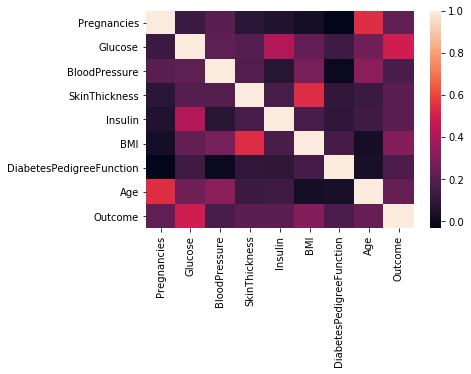

Implementasi (Studi Kasus)
Tools
Sebelum menerapkan konsep k-nearest neighbor pada studi kasus yang telah ditentukan, beberapa tools yang perlu dipersiapkan agar program yang kita rancang bisa dieksekusi dengan baik diantaranya:
- python 3.x (versi 3 keatas).
- Anaconda Navigator atau Pycharm.
Untuk mempermudah kawan-kawan mendapatkan toolsnya, sillakan kawan-kawan bisa download tools-nya disini.
Studi kasus pada Fruit Data adalah mengklasifikasikan beberapa jenis buah dengan 3 ketentuan inputan. Untuk contoh penulisan program dan datanya bisa mengambil kawan-kawan download disini.
Berikut source code dan penjelasan untuk menyelesaikan study kasus tersebut dengan K-NN Classification.
Langkah-langkah:
Pertama
Import beberapa library dari python seperti:
- pandas => memuat sebuah file ke dalam tabel virtual ala spreadsheet.
- numpy => untuk operasi vektor dan matriks. Fiturnya hampir sama dengan MATLAB dalam mengelola array dan array multidimensi.
- matpolib => untuk menyajikan visualisasi data cluster.
- sklearn => untuk mengimportkan library data science
#import library
import numpy as np
import pandas as pd
from sklearn.model_selection import train_test_split
from sklearn.preprocessing import StandardScaler
from sklearn.neighbors import KNeighborsClassifier
from sklearn.metrics import confusion_matrix
from sklearn.metrics import f1_score
from sklearn.metrics import accuracy_score
import seaborn as sns
import matplotlib.pyplot as plt
%matplotlib inline
Kedua
Mengimport data dari komputer dengan perintah pandas.
#read data
data = pd.read_csv('D:\MATKUL SI\Matkul UTM Semester4\diabetes.csv') # Pastikan file data set berada dalam folder yang sama dengan file jupyter notebook
Ketiga
Menampilkan data.
#explore data
print(data.shape)
data.head(15) # Menampilkan 15 baris pertama dari tabel
| Pregnancies | Glucose | BloodPressure | SkinThickness | Insulin | BMI | DiabetesPedigreeFunction | Age | Outcome | |
|---|---|---|---|---|---|---|---|---|---|
| 0 | 6 | 148.0 | 72.0 | 35.0 | 155.0 | 33.6 | 0.627 | 50 | 1 |
| 1 | 1 | 85.0 | 66.0 | 29.0 | 155.0 | 26.6 | 0.351 | 31 | 0 |
| 2 | 8 | 183.0 | 64.0 | 29.0 | 155.0 | 23.3 | 0.672 | 32 | 1 |
| 3 | 1 | 89.0 | 66.0 | 23.0 | 94.0 | 28.1 | 0.167 | 21 | 0 |
| 4 | 0 | 137.0 | 40.0 | 35.0 | 168.0 | 43.1 | 2.288 | 33 | 1 |
| 5 | 5 | 116.0 | 74.0 | 29.0 | 155.0 | 25.6 | 0.201 | 30 | 0 |
| 6 | 3 | 78.0 | 50.0 | 32.0 | 88.0 | 31.0 | 0.248 | 26 | 1 |
| 7 | 10 | 115.0 | 72.0 | 29.0 | 155.0 | 35.3 | 0.134 | 29 | 0 |
| 8 | 2 | 197.0 | 70.0 | 45.0 | 543.0 | 30.5 | 0.158 | 53 | 1 |
| 9 | 8 | 125.0 | 96.0 | 29.0 | 155.0 | 32.0 | 0.232 | 54 | 1 |
| 10 | 4 | 110.0 | 92.0 | 29.0 | 155.0 | 37.6 | 0.191 | 30 | 0 |
| 11 | 10 | 168.0 | 74.0 | 29.0 | 155.0 | 38.0 | 0.537 | 34 | 1 |
| 12 | 10 | 139.0 | 80.0 | 29.0 | 155.0 | 27.1 | 1.441 | 57 | 0 |
| 13 | 1 | 189.0 | 60.0 | 23.0 | 846.0 | 30.1 | 0.398 | 59 | 1 |
| 14 | 5 | 166.0 | 72.0 | 19.0 | 175.0 | 25.8 | 0.587 | 51 | 1 |
Keempat
Mengganti beberapa kolom dengan nilai 0 rata-rata
zero_not_accepted = ['Glucose','BloodPressure','SkinThickness','BMI','Insulin']
# for col in zero_not_accepted:
# for i in data[col]:
# if i==0:
# colSum = sum(data[col])
# meanCol=colSum/len(data[col])
# data[col]=meanCol
for col in zero_not_accepted:
data[col]= data[col].replace(0,np.NaN)
mean = int(data[col].mean(skipna=True))
data[col] = data[col].replace(np.NaN,mean)
Kelima
Selanjutnya mengekstrak variable yang berdiri sendiri
X = data.iloc[:,0:8]
Keenam
mengekstrak variable yang berada dalam kelompok
y = data.iloc[:,8]
Ketujuh
explore data untuk mengatahui relasi data
sns.heatmap(data.corr())

plt.figure(figsize=(25,7))
sns.countplot(x='Age',hue='Outcome',data=data,palette='Set1')
.png)
Kedelapan
memisahkan data menjadi data training and testing
#build model & train data
X = data[['Glucose','BloodPressure','Age']]
y = data['Outcome']
#split data
X_train, X_test, y_train, y_test = train_test_split(X, y, test_size = 0.3, random_state=0)
print('X_train = ', X_train.shape)
print('X_test = ', X_test.shape)
print('y_train = ', y_train.shape)
print('y_test = ', y_test.shape)
X_train = (537, 3)
X_test = (231, 3)
y_train = (537,)
y_test = (231,)
X_train.head()
| Glucose | BloodPressure | Age | |
|---|---|---|---|
| 580 | 151.0 | 90.0 | 21 |
| 418 | 83.0 | 68.0 | 27 |
| 764 | 122.0 | 70.0 | 27 |
| 363 | 146.0 | 78.0 | 67 |
| 757 | 123.0 | 72.0 | 52 |
y_train.head()
580 1
418 0
764 0
363 1
757 1
Name: Outcome, dtype: int64
Kesembilan
menstandarkan nilai melalui scaling
scaler = StandardScaler()
X_train = scaler.fit_transform(X_train)
X_test = scaler.transform(X_test)
Kesepuluh
Memuat Model KNN
classifier = KNeighborsClassifier(n_neighbors=5,p=2,metric='euclidean')
classifier.fit(X_train,y_train)
KNeighborsClassifier(algorithm='auto', leaf_size=30, metric='euclidean',
metric_params=None, n_jobs=None, n_neighbors=5, p=2,
weights='uniform')
Kesebelas
Selanjutnya Membuat Prediksi
y_pred = classifier.predict(X_test)
Sedua belas
Dilanjutkan evaluasi model
conf_matrix = confusion_matrix(y_test,y_pred)
print(conf_matrix)
print(f1_score(y_test,y_pred))
[[140 17]
[ 40 34]]
0.5439999999999999
Ketiga Belas
Terakhir menentukan akurasi
print(accuracy_score(y_test,y_pred))
Sehingga menghasilkan 0.7532467532467533
Donwload data file csvnya di link bawah ini :